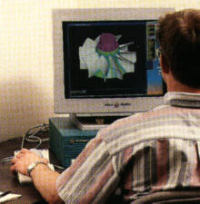
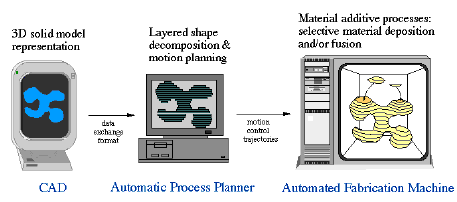
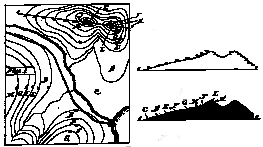
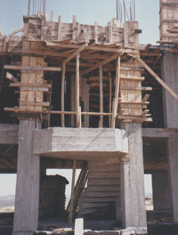
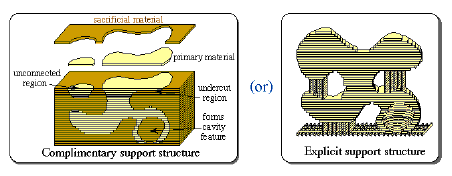
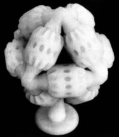

|
|
|
| Home | Previous Page | Next Page |
Summary:
Aslýnda autofabrication teknolojisi
konusunda son 100 senedir çeþitli çalýþmalar yapýlmasýna
raðmen bilgisayar ve diðer teknoloji sahalarýnda varýlan
seviye yardýmýyla ancak son 15 yýlda geliþmiþ autofabrication
cihazlarý ticari olarak üretilmektedirler. Bu cihazlarýn
fiyatý 5.000 $ ile 700.000 $ arasýnda deðiþmektedir. Sýrasýyla
ABD, Japonya, Almanya ve Ýsrail bu teknoloji ve uygulamalarý
konusunda baþý çekmektedir.
Definition of Autofabrication:
autofabrication teknolojileri 1986'da ABD'nde ticari olduðu
ilk yýllarda sadece hýzlý model ve prototip imalatý
amacýyla geliþtirilip kullanýldýðýndan, bu teknolojiler,
kapsamý ve anlamý bakýmýndan çok uygun olan "autofabrication"
(autofabrication) veya "automated fabrication" yerine
çoðunlukla "rapid prototyping" (hýzlý prototipleme)
adýyla anýlmýþtýr. Sonralarý, geliþen teknoloji ve açýlan
yeni uygulama sahalarý ile birlikte artýk bu ismin yetersiz
ve dar kapsamlý kaldýðý ilgili çevrelerce de kabul edilmesine
raðmen ilk yýllarda verilen bu isme piyasa alýþmýþ olduðu
için deðiþtirmek mümkün olmamýþtýr. autofabrication teknolojileri
için daha birçok farklý isimlendirme ve kýsaltmalar
kullanýlabilmektedir; Bunlardan bazýlarý, "additive
fabrication", "additive manufacturing",
"Solid Freeform Fabrication, SFF", (katý, serbest
þekilli inþa), "Free Form Fabrication, FFF",
"Layered Manufacturing" (katmanlý imalat), "3D
Printing" (3 Boyutlu Yazýcý) þeklindedir... |
Three Dimensional Computer Aided Design (3D CAD):
autofabrication
teknolojisinde, üretilmesi düþünülen parça önce 3 boyutlu
bir tasarým programý ile bilgisayarda modellenir. Saðda,
Modern bir CAD (Computer Aided Design /Bilgisayar Destekli
Tasarým) istasyonu: Tasarýmcý, sol elindeki küreye uyguladýðý
kuvvet ile ekranda gözüken 3 boyutlu parçayý döndürerek
istediði açýdan görebilir. Önündeki klavye ve sað elindeki
fareyi kullanarak da parça geometrisi üzerinde istediði
birçok deðiþikliði yapabilir.
Tasarýma sýfýrdan baþlanabileceði
gibi halihazýrda var olan bir model veya cismin 3 boyutlu
tarayýcýlar ile taranmasýyla elde edilen veri de kullanýlabilir.
Mesela bir ürün tasarýmcýnýn kil kullanarak yaptýðý
yeni bir ergonomik telefon ahizesine ait geometri verisi
bu sayede bilgisayara aktarýlarak üzerinde istenilen
deðiþiklikler yapýlýr. Piyasada çok deðiþik tipte 3
boyutlu tarayýcýlar vardýr. Lazer ýþýnlý ve temaslý
(mekanik) tarayýcýlarýn cismin sadece dýþ yüzeyine ait
veriyi toplayabilmelerine karþýn, bilgisayarlý tomografi,
cismin iç yapýsýna ait özellikleri de algýlayabilir.
Tomografi, mühendislikle birlikte daha ziyade týpta
kullanýlan bir 3 boyutlu tarama tekniðidir.
STL Format for 3D model data exchange:
Tasarlanan 3 boyutlu model geometrisi çoðunlukla STL
formatýnda tanýmlanarak autofabrication cihazlarýna aktarýlýr.
STL formatý ilk defa 1988 yýlýnda 3D Systems firmasý
adýna Albert Consulting Group tarafýndan geliþtirilmiþ
ve kullaným kolaylýðý sebebiyle bu format kýsa sürede
yaygýnlaþarak piyasada bir standart haline gelmiþtir.
STL "STereoLithography" anlamýna gelen ve
her türlü 3D geometriyi biribirine baðlý üçgen þeklindeki
düz yüzeylerle ifade eden bir formattýr. Eðimli yüzeylere
sahip bir parçanýn üçgenlerle ifade edilmesi belli bir
hata payý oluþturur ama üçgen sayýsýnýn yeterince fazla
tutulmasý sayesinde CAD dosyasýndaki hata payý üretim
hatasýnýn altýna indirilebilir. Günümüzde hemen hemen
tüm 3D CAD yazýlýmlarý STL formatýnda çýktý verebilmekte
ve her autofabrication cihazý da bu formatý kabul etmektedir.
Fakat 3D CAD yazýlýmlarý hatalý STL çýktýsý verebilmektedirler.
Hatalý STL dosyalarý düzeltmek için ise ayrý yazýlýmlar
geliþtirilmiþtir.
Daha sonralarý, STL formatý kadar yaygýn olmayan, firma
veya cihaza özel farklý formatlar da geliþtirilmiþtir... |
| 3D
modelin katmanlara bölünerek inþa edilmesi:

Solda: Bilgisayar destekli
çizim programý (CAD) ile modellenmiþ parça.
Ortada: Model sýk
kesitlere bölünür ve her katmanýn þekli hesaplanýr.
Saðda: Daha sonra
bu kesit verileri bir autofabrication cihazýna aktarýlarak, polimer,
kaðýt, metal, seramik vb. hammaddeler ile parça, katmanlar
halinde inþa edilir. |
| Saðda:
Yeryüzü þekillerinin (topoðrafya) mukavvalarýn kat kat
kesilip üst üste yapýþtýrýlarak elde edildiðine birçoðumuz
gördüðümüz bina maketlerinden þahit olmuþuzdur. autofabrication
teknolojisi ise çok daha ince katmanlarý farklý malzemelerden
ve tam otomatik olarak inþa eder. |
|
Ýnþa
sýrasýnda destek yapýsý kullanýmý:
Bu
imalat yöntemi bir bina inþasýna çok benzemektedir,
gerekli durumlarda sonradan kaldýrýlmak üzere destek
malzemeleri kullanýlýr.
Ýki katlý betonarme
bir yapý ve merdivenlerini gösteren saðdaki resim, inþa
sýrasýnda sonradan kaldýrýlmak üzere kullanýlan destek
ve kalýp uygulamasýna güzel bir örnek teþkil etmektedir. |
|
Ýki
temel destek destek yapýsý tekniði:

autofabrication teknolojilerinde
temelde iki türlü destek yapýsý kullanýlmaktadýr:
Solda: Çevreleyici
destek kullanýmý görülmekte. Bu yöntemde üretilen
parça dýþýndaki tüm boþluða farklý kimyasal özelliðe
sahip bir destek malzemesi doldurulur. Daha sonra bu
destek malzemesi, sýcaklýk veya çeþitli kimyasal sývýlara
maruz býrakýlarak ayrýþtýrýlýr.
Saðda: Sadece
gerekli kýsýmlara konulan sütunlu destek yapýsý.
Bu teknikte genellikle ana inþa malzemesi kullanýldýðý
gibi farklý bir destek malzemesi de kullanýlabilir.
Ýnþa sonrasý destek malzemesi manuel olarak kýrýlýp
sökülebileceði gibi, kimyasal yolla veya ýsýyla eritilerek
de asýl parçadan ayrýlabilir. |
autofabrication
ile imalatýn farklýlýðý ve avantajlarýný gösteren çarpýcý
örnekler:
Bu
sayede klasik talaþlý imalat
yöntemleriyle üretilmesi çok zor ve hatta imkansýz olan
geometriler çok kolayca ve otomatik olarak üretilebilir.
Mesela bir küp içinde bir küre veya hareketli parçalardan
oluþan bir mekanizma hiçbir ek yeri veya imalat sonrasý
montaj gerektirmeden imal edilebilir. Saðdaki resimde,
12 diþli ve bir gövde olmak üzere toplam 13 parçadan oluþan
bir mekanizma görülmektedir. Diþlilerden herhangi birisi
döndürüldüðünde diðerleri de buna baðlý olarak dönmektedir.
autofabrication teknolojisinin neler yapabileceðini göstermek
açýsýndan güzel bir örnek olan bu mekanizma, bilgisayarla
tasarlandýktan sonra, çalýþabilir halde ve tek seferde
(el deðmeden) inþa edilmiþ ve herhangi bir ek yeri veya
montaj ihtiyacý göstermemiþtir!
Bu mekanizma, çevreleyici
destek malzemesi kullanan Cubital/SGC
teknolojisi ile üretimiþtir. Yýllar sonra ayný mekanizma
Stratasys/FDM
teknolojisi ile de üretilmiþtir. |
 Ayrýca,
tek parça içinde deðiþik kýsýmlarda farklý malzemeler
kullanýlabilir ki asýl bu, autofabrication teknolojisinin ileriye
yönelik büyük bir potansiyelini teþkil etmektedir. Örneðin
plastik- metal karýþýmý parçalar imal edilebilir. Bu teknoloji
ile dýþ yüzeyi paslanmaz çelik iç kýsýmlarý da bakýr olan
parçalar imal edilebilir. Saðdaki resim, autofabrication
teknolojisisinin bu özelliðinin ilk uygulamalarýndan birisini
göstermektedir. Diþleri arýzalý olan bir hastanýn tomografi
verisine baðlý olarak çene kemiði modeli üretilmiþtir.
Diþlerin kemik içinde kalan kýsýmlarýnýn da görünebilmesi
için inþa sýrasýnda diþler ayrý bir renk ile imal edilmiþlerdir.
Bu gibi modeller ameliyatý planlamakla sorumlu doktorlar
için çok yararlý olmaktadýr. Ayrýca,
tek parça içinde deðiþik kýsýmlarda farklý malzemeler
kullanýlabilir ki asýl bu, autofabrication teknolojisinin ileriye
yönelik büyük bir potansiyelini teþkil etmektedir. Örneðin
plastik- metal karýþýmý parçalar imal edilebilir. Bu teknoloji
ile dýþ yüzeyi paslanmaz çelik iç kýsýmlarý da bakýr olan
parçalar imal edilebilir. Saðdaki resim, autofabrication
teknolojisisinin bu özelliðinin ilk uygulamalarýndan birisini
göstermektedir. Diþleri arýzalý olan bir hastanýn tomografi
verisine baðlý olarak çene kemiði modeli üretilmiþtir.
Diþlerin kemik içinde kalan kýsýmlarýnýn da görünebilmesi
için inþa sýrasýnda diþler ayrý bir renk ile imal edilmiþlerdir.
Bu gibi modeller ameliyatý planlamakla sorumlu doktorlar
için çok yararlý olmaktadýr. |
| Home | Previous Page | Next Page | |
|